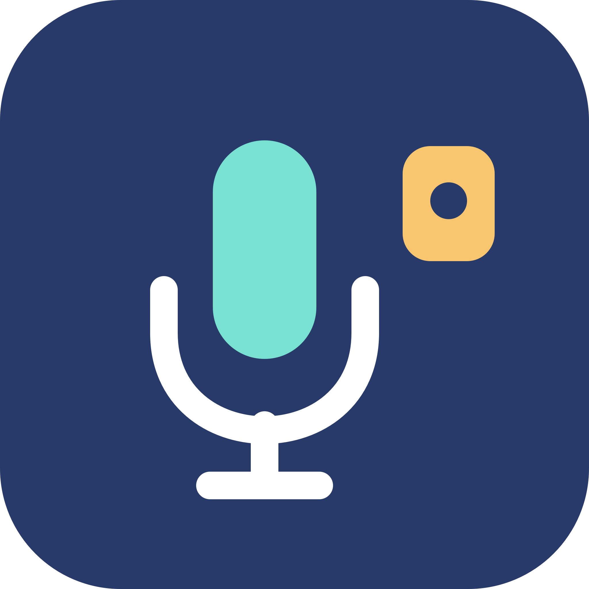
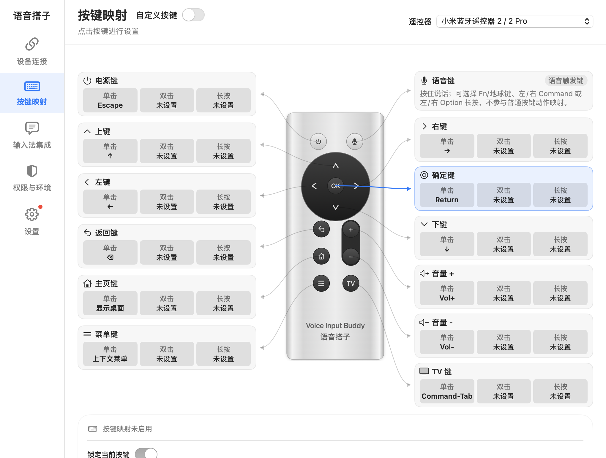
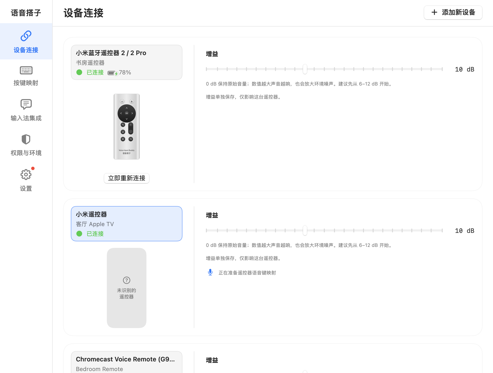
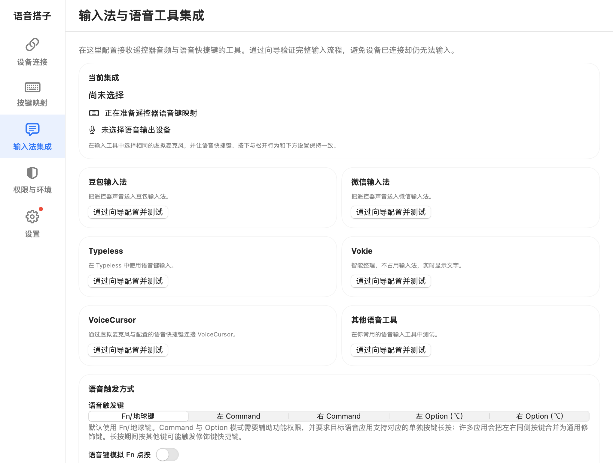
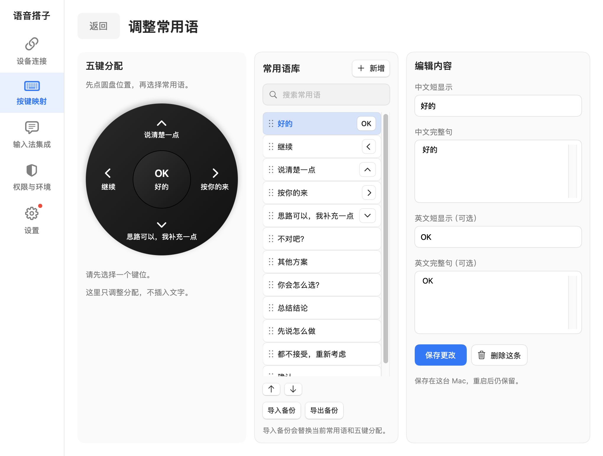
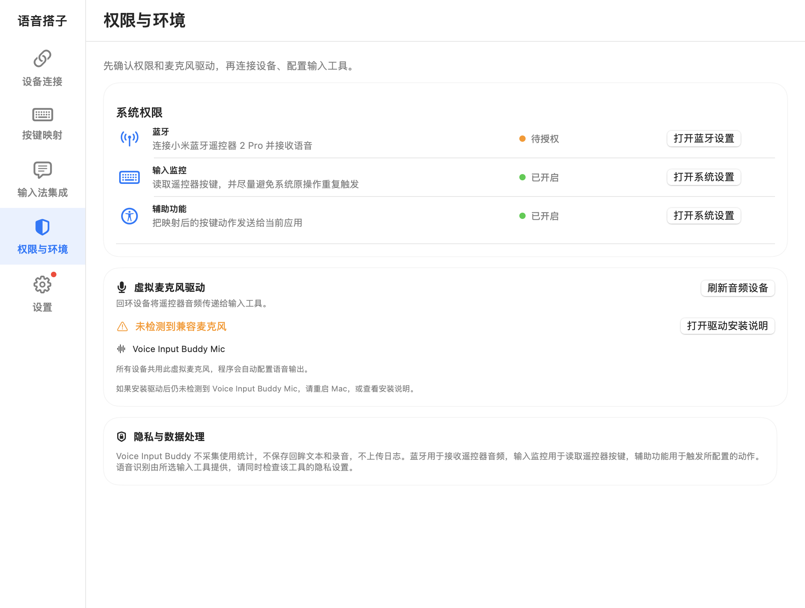

支持的硬件
小米蓝牙遥控器 2 / 2 ProChromecast Voice Remote（G9N9N）Google TV Streamer Voice Remote（GY3LE）Apple Siri Remote

Voice Input Buddy语音搭子硬件 × 语音输入
拿起遥控器，按下说话，松开结束。
让你喜欢的输入法，听见遥控器里的声音。
macOS 14+ · arm64 / Intel 独立安装包 · 通用卸载器 · 开源
今天的想法，
从一句话开始。
按住麦克风按钮体验触发示意。这里不录音。
按住或点按语音键，匹配输入工具的开始与结束方式。
快捷键、应用操作、常用语，让遥控器成为顺手的工具。
连接语音输入法与听写工具，沿用熟悉的识别体验。
工作原理
麦克风音频 + 按键
解码音频 · 触发快捷键
识别声音 · 写入文本
遥控器通过蓝牙传来声音，语音搭子解码后送入虚拟麦克风，同时发送对应的语音快捷键。识别、实时文字与文本修正由输入工具完成；语音搭子本身不运行识别模型。
macOS 原生界面
原生 SwiftUI 精心打造，从按键动作映射、多设备管理，到主流输入法集成与常用语速选，一目了然。

按键映射：中央显示遥控器按键示意图，支持为电源键、确定键、方向键、返回键、主页键、菜单键与 TV 键分别指定单击、双击和长按动作或快捷键。

设备连接：显示已配对的蓝牙遥控器卡片与电量状态，支持添加新设备，并可单独调节每台遥控器的麦克风输入增益（0 dB 至 20 dB）。

输入法集成：提供豆包输入法、微信输入法、Typeless、Vokie、VoiceCursor 及其他自定义工具的专用配置向导入口，并可自由选择语音触发按键（Fn、Command、Option 等）。

常用语管理：通过圆盘方向键与 OK 键快速选择并输入常用语句，支持中英文短语自定义、词库导入导出与五键分配。

权限与环境：集中管理蓝牙、输入监控与辅助功能三项系统授权，监控 Voice Input Buddy Mic 虚拟麦克风驱动的加载状态，并提供安装指引。
两分钟上手
两分钟卡通演示：权限准备、遥控器连接、按键映射，以及用微信输入法完成语音输入。
2 分钟 · 中文旁白 · 中文字幕
从 Release 下载 PKG，打开 Applications 中的 Voice Input Buddy。
按向导授权蓝牙、输入监控和辅助功能。
连接遥控器并测试按键，等待驱动检查通过。App 自动使用 Voice Input Buddy Mic；在输入工具里选择同名麦克风，配置语音快捷键。
通过向导测试，再按住语音键说话、松开结束。使用 Typeless 等单击触发的工具，可在设置中调整。
兼容范围
选择对应入口，通过虚拟麦克风和语音快捷键配置。VoiceCursor 与其他工具分别提供入口，使用通用快捷键流程。
工具必须支持所选麦克风与语音快捷键。不同版本请通过向导验证；配置入口不代表所有版本已验证。
TROUBLESHOOTING · 常见问题
这类工具可能独占遥控器，导致语音搭子收不到按键。典型表现是 TV 键不能切换应用、返回键不能退格，而蓝牙连接或语音仍然正常。
若仍提示“设备被其他输入工具占用”，可重启 Karabiner-Elements 后再试；同时检查语音搭子的输入监控与辅助功能权限。
Karabiner 官方设备设置说明 ↗本地桥接，清楚的边界
语音搭子不采集使用统计，也不上传日志。输入工具是否联网识别，请查看该工具的设置。
安装驱动需要管理员授权，会短暂重启音频服务。当前 PKG 未经 Apple 公证，系统可能阻止安装。